单指纹全模块逐步骤
固定样本：hyh_L1 / pair_100。主链：原始CSV → V7 → 固定去噪 → 传统分割 → FFQ。MobileSeg、一致性和人工缺口生长为独立分支。
图像为实际中间结果。复数的负值和全部网络特征原始数组保存在各目录NPZ中；独立拉伸和最近邻放大仅供显示，不代表增强或信息增加。
00_原始五相位与预处理
同一次normal采集，五张wo和五张wi；差分与五帧共用范围量化后送入实际V7。
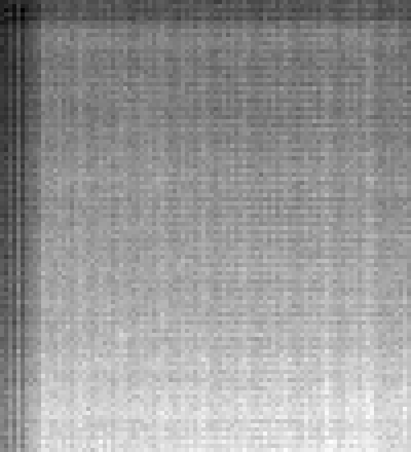
01 wo_Rgd1421
01_wo_Rgd1421.png
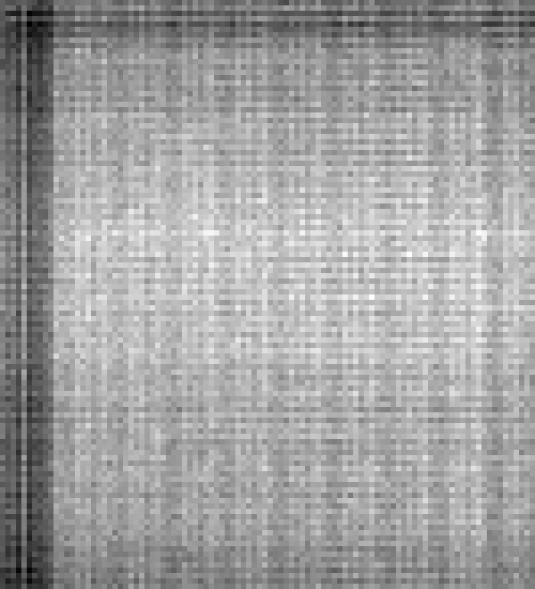
02 wo_Rgd1423
02_wo_Rgd1423.png
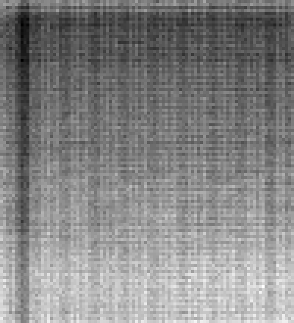
03 wo_Rgd1425
03_wo_Rgd1425.png
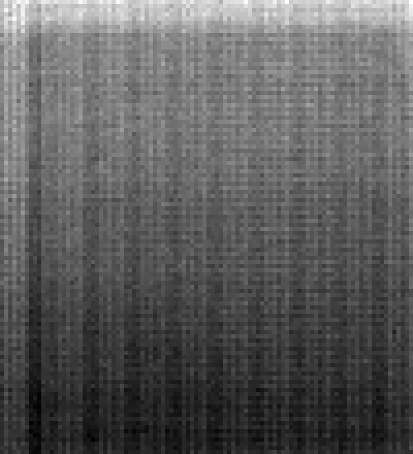
04 wo_Rgd1427
04_wo_Rgd1427.png
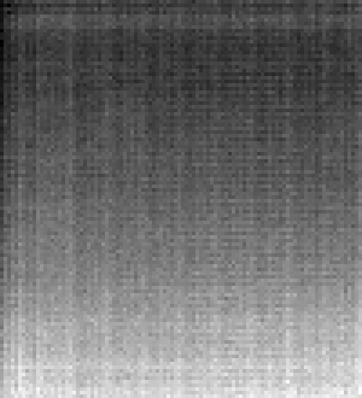
05 wo_Rgd1429
05_wo_Rgd1429.png
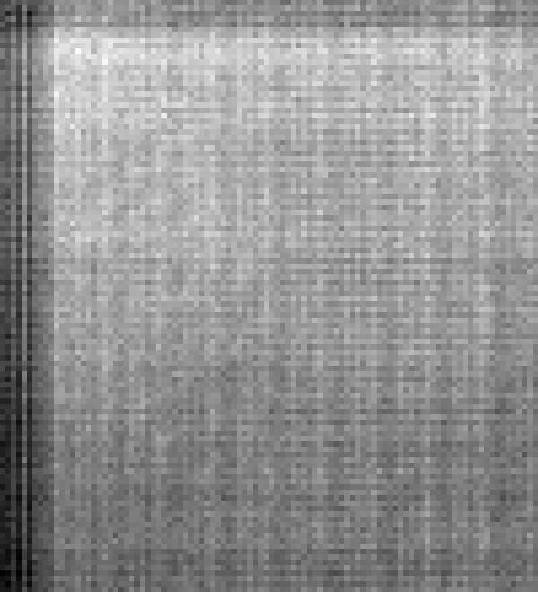
06 wi_Rgd1421
06_wi_Rgd1421.png
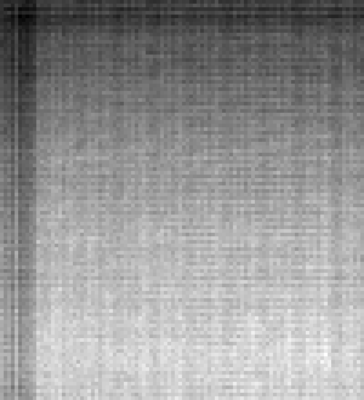
07 wi_Rgd1423
07_wi_Rgd1423.png
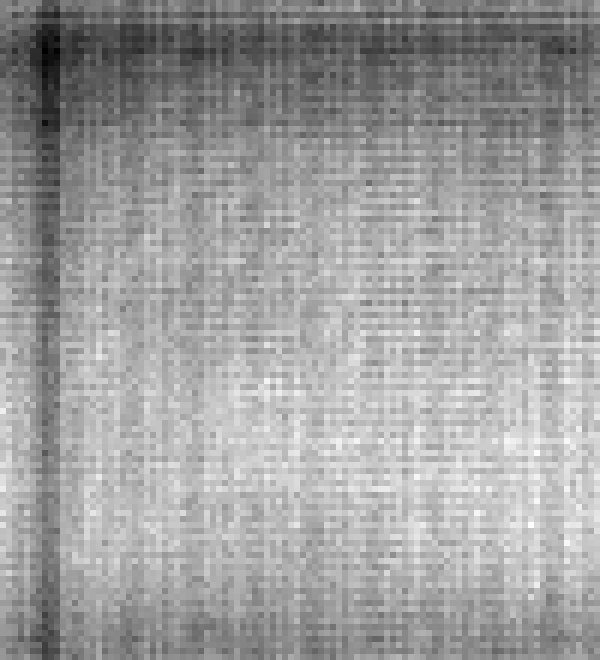
08 wi_Rgd1425
08_wi_Rgd1425.png
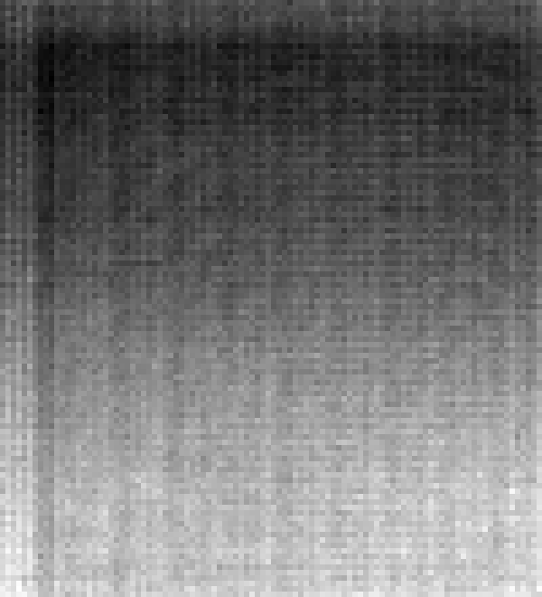
09 wi_Rgd1427
09_wi_Rgd1427.png
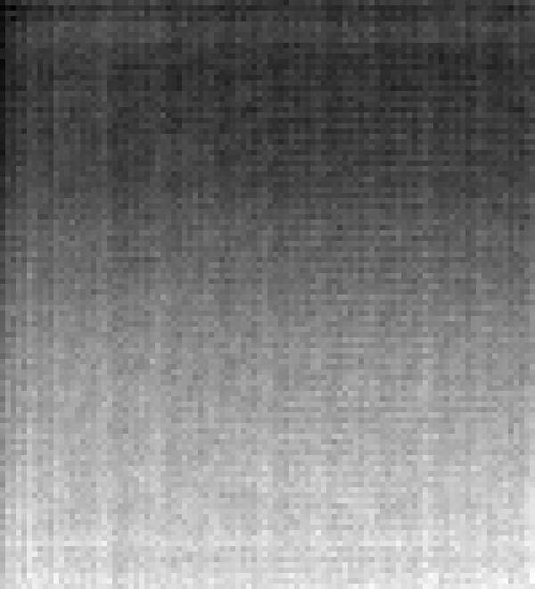
10 wi_Rgd1429
10_wi_Rgd1429.png
11 wo减wi_Rgd1421
11_wo减wi_Rgd1421.png
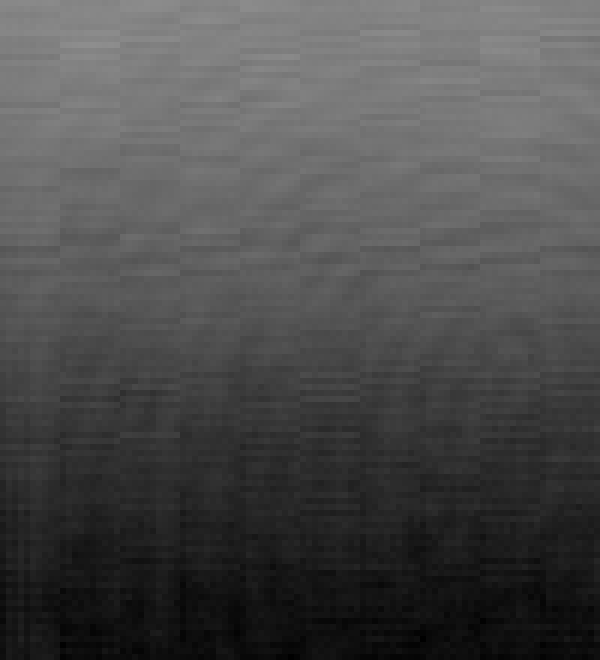
12 wo减wi_Rgd1423
12_wo减wi_Rgd1423.png
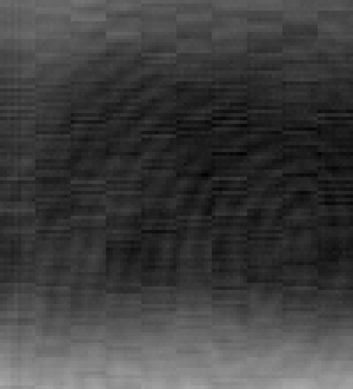
13 wo减wi_Rgd1425
13_wo减wi_Rgd1425.png
14 wo减wi_Rgd1427
14_wo减wi_Rgd1427.png
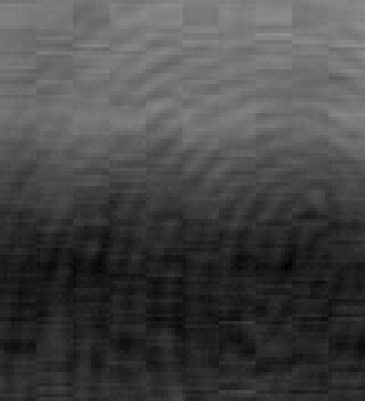
15 wo减wi_Rgd1429
15_wo减wi_Rgd1429.png
16 五帧共用量化_Rgd1421
16_五帧共用量化_Rgd1421.png
17 五帧共用量化_Rgd1423
17_五帧共用量化_Rgd1423.png
18 五帧共用量化_Rgd1425
18_五帧共用量化_Rgd1425.png
19 五帧共用量化_Rgd1427
19_五帧共用量化_Rgd1427.png
20 五帧共用量化_Rgd1429
20_五帧共用量化_Rgd1429.png
01_衍射校正V7
实际toolkit V7；含初相估计、逐帧解调、行/列与局部均值、传播核和逆滤波、边界扩展、卷积、投影及量化。
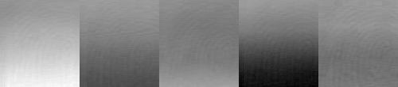
01 输入五相位横排
01_输入五相位横排.png
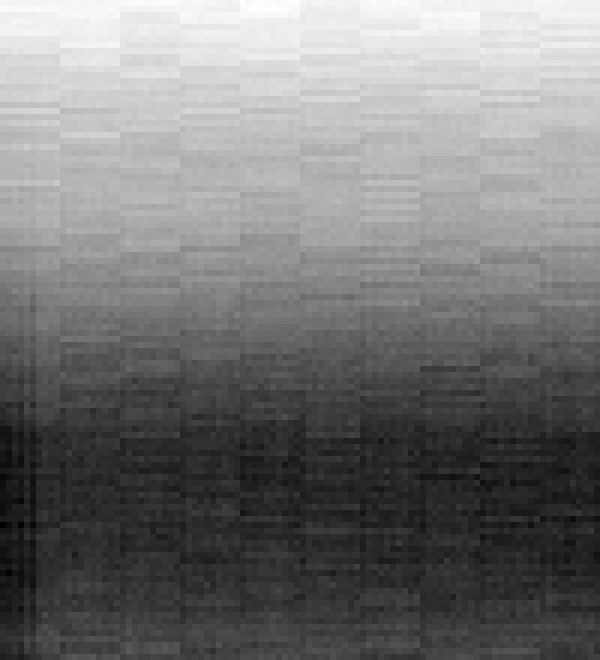
02 正弦拟合直流A
02_正弦拟合直流A.png
拟合诊断图，不改写V7解调公式03 正弦拟合余弦系数C
03_正弦拟合余弦系数C.png
拟合诊断图，不改写V7解调公式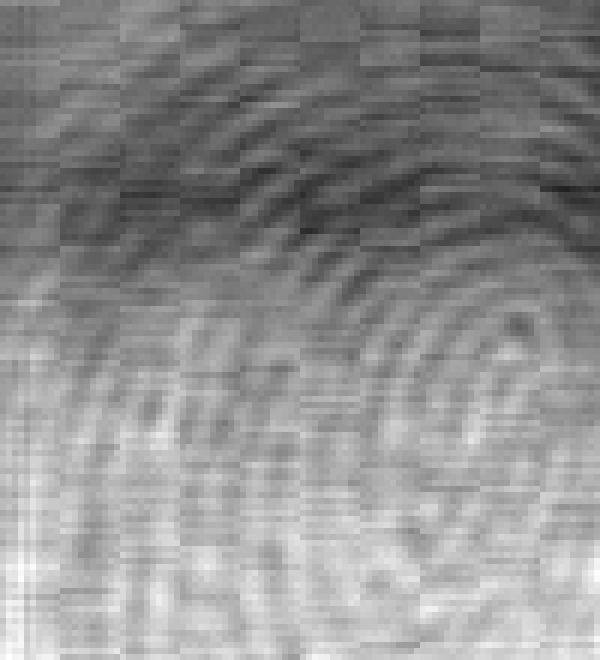
04 正弦拟合正弦系数S
04_正弦拟合正弦系数S.png
拟合诊断图，不改写V7解调公式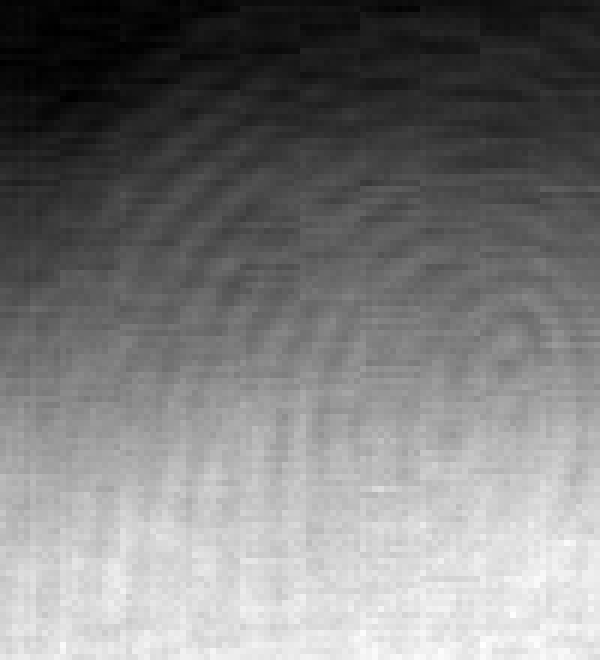
05 调制度M
05_调制度M.png
拟合诊断图，不改写V7解调公式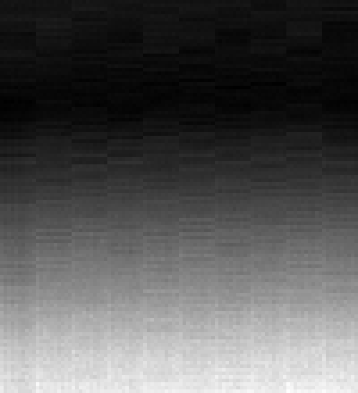
06 五采样拟合RMSE
06_五采样拟合RMSE.png
拟合诊断图，不改写V7解调公式07 逐像素初相位
07_逐像素初相位.png
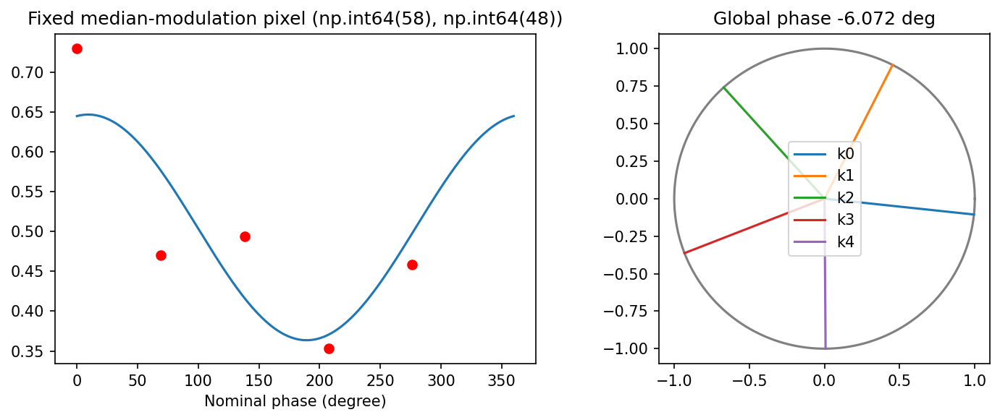
08 五次采样与相位位置
08_五次采样与相位位置.png
固定中位调制度像素，非挑选最完美正弦；采样步进69.12度 09 第1帧复数贡献
09 第1帧复数贡献
09_第1帧复数贡献_实部.png
09 第1帧复数贡献
09_第1帧复数贡献_虚部.png
 09 第1帧复数贡献
09 第1帧复数贡献
09_第1帧复数贡献_幅值.png
09 第1帧复数贡献
09_第1帧复数贡献_相位.png
 10 累加至第1帧
10 累加至第1帧
10_累加至第1帧_实部.png
 10 累加至第1帧
10 累加至第1帧
10_累加至第1帧_虚部.png
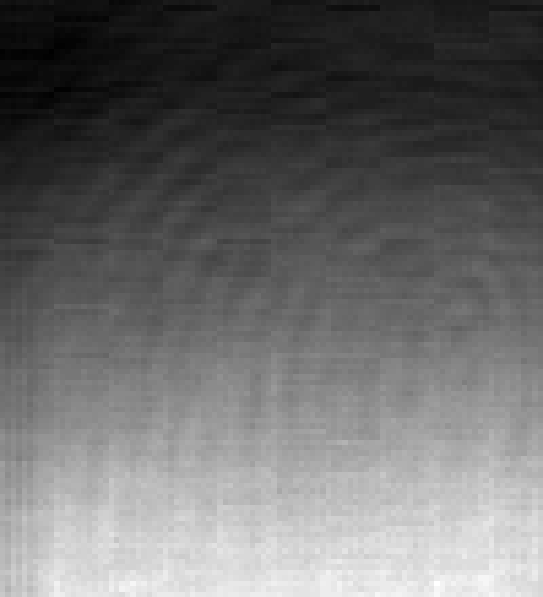
10 累加至第1帧
10_累加至第1帧_幅值.png
 10 累加至第1帧
10 累加至第1帧
10_累加至第1帧_相位.png
11 第2帧复数贡献
11_第2帧复数贡献_实部.png
11 第2帧复数贡献
11_第2帧复数贡献_虚部.png
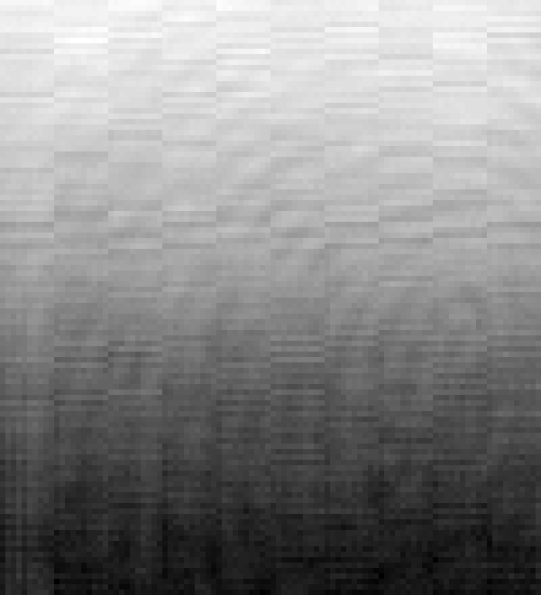
11 第2帧复数贡献
11_第2帧复数贡献_幅值.png
11 第2帧复数贡献
11_第2帧复数贡献_相位.png
12 累加至第2帧
12_累加至第2帧_实部.png
12 累加至第2帧
12_累加至第2帧_虚部.png
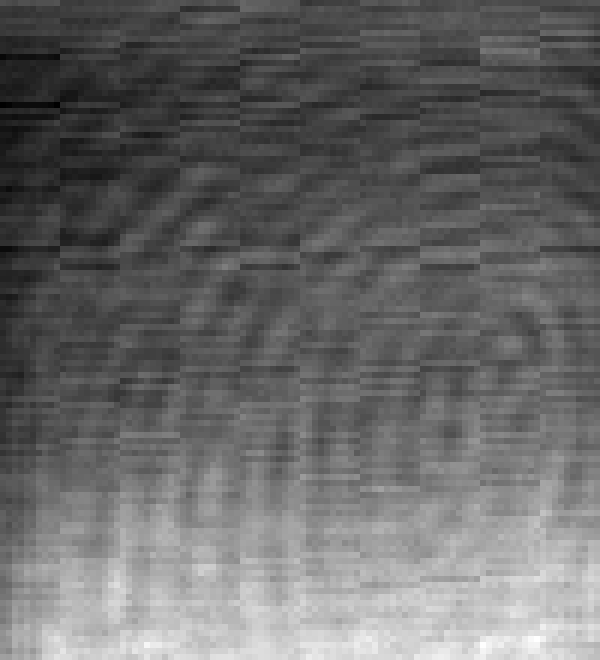
12 累加至第2帧
12_累加至第2帧_幅值.png
12 累加至第2帧
12_累加至第2帧_相位.png
13 第3帧复数贡献
13_第3帧复数贡献_实部.png
 13 第3帧复数贡献
13 第3帧复数贡献
13_第3帧复数贡献_虚部.png
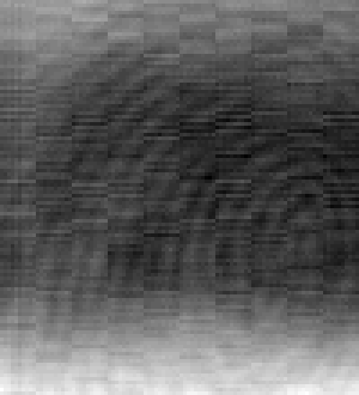
13 第3帧复数贡献
13_第3帧复数贡献_幅值.png
13 第3帧复数贡献
13_第3帧复数贡献_相位.png
14 累加至第3帧
14_累加至第3帧_实部.png
14 累加至第3帧
14_累加至第3帧_虚部.png
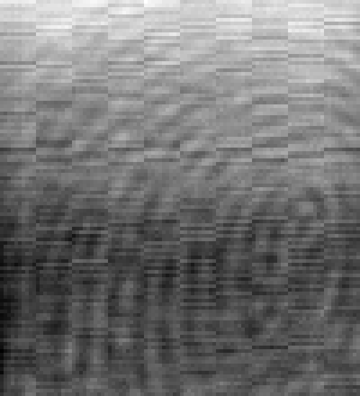
14 累加至第3帧
14_累加至第3帧_幅值.png
14 累加至第3帧
14_累加至第3帧_相位.png
15 第4帧复数贡献
15_第4帧复数贡献_实部.png
15 第4帧复数贡献
15_第4帧复数贡献_虚部.png
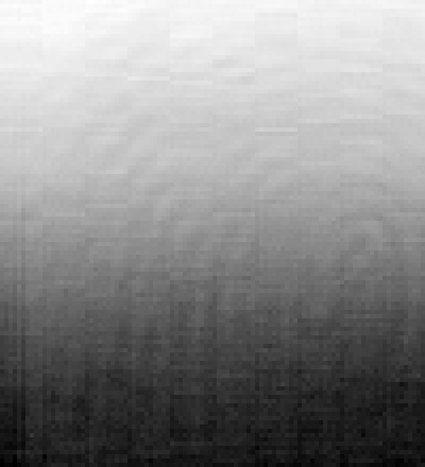
15 第4帧复数贡献
15_第4帧复数贡献_幅值.png
15 第4帧复数贡献
15_第4帧复数贡献_相位.png
16 累加至第4帧
16_累加至第4帧_实部.png
16 累加至第4帧
16_累加至第4帧_虚部.png
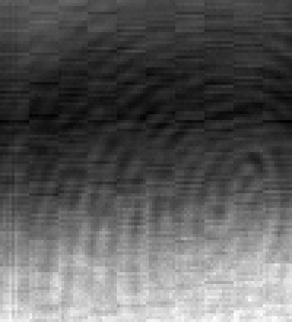
16 累加至第4帧
16_累加至第4帧_幅值.png
16 累加至第4帧
16_累加至第4帧_相位.png
17 第5帧复数贡献
17_第5帧复数贡献_实部.png
 17 第5帧复数贡献
17 第5帧复数贡献
17_第5帧复数贡献_虚部.png
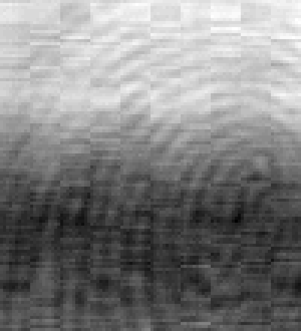
17 第5帧复数贡献
17_第5帧复数贡献_幅值.png
17 第5帧复数贡献
17_第5帧复数贡献_相位.png
 18 累加至第5帧
18 累加至第5帧
18_累加至第5帧_实部.png
 18 累加至第5帧
18 累加至第5帧
18_累加至第5帧_虚部.png
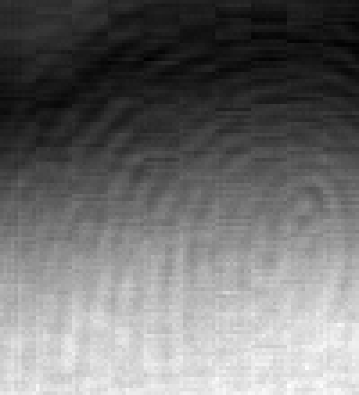
18 累加至第5帧
18_累加至第5帧_幅值.png
 18 累加至第5帧
18 累加至第5帧
18_累加至第5帧_相位.png
19 V7实际解调复场
19_V7实际解调复场_实部.png
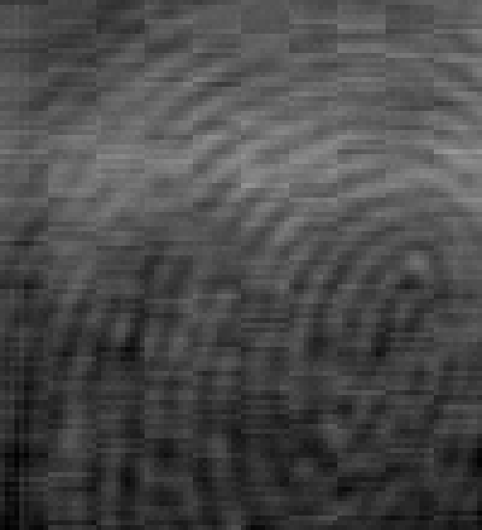
19 V7实际解调复场
19_V7实际解调复场_虚部.png
 19 V7实际解调复场
19 V7实际解调复场
19_V7实际解调复场_幅值.png
19 V7实际解调复场
19_V7实际解调复场_相位.png
20 减掉的行均值
20_减掉的行均值_实部.png
20 减掉的行均值
20_减掉的行均值_虚部.png
20 减掉的行均值
20_减掉的行均值_幅值.png
20 减掉的行均值
20_减掉的行均值_相位.png
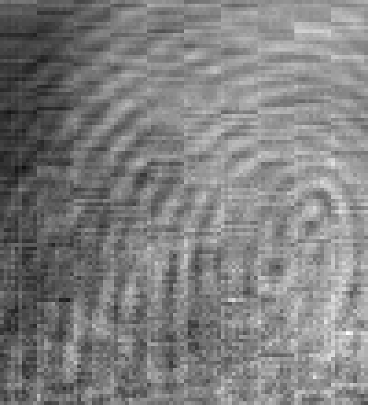
21 减行均值后
21_减行均值后_实部.png
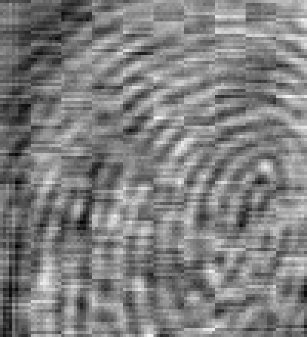
21 减行均值后
21_减行均值后_虚部.png
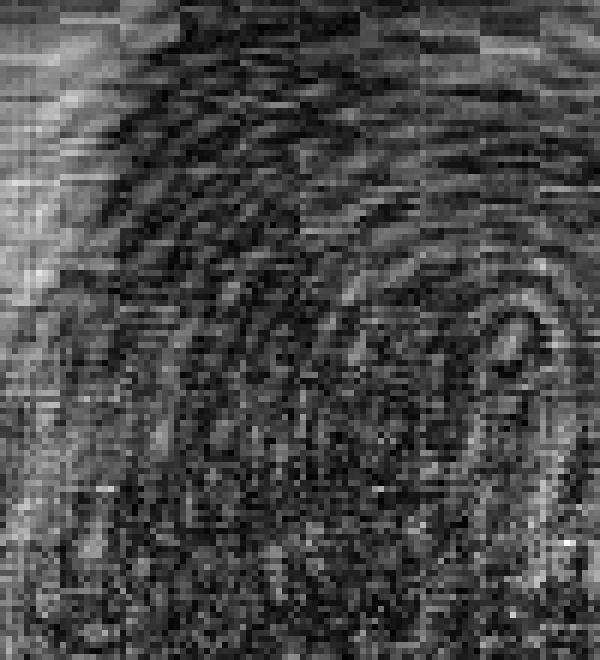
21 减行均值后
21_减行均值后_幅值.png
21 减行均值后
21_减行均值后_相位.png
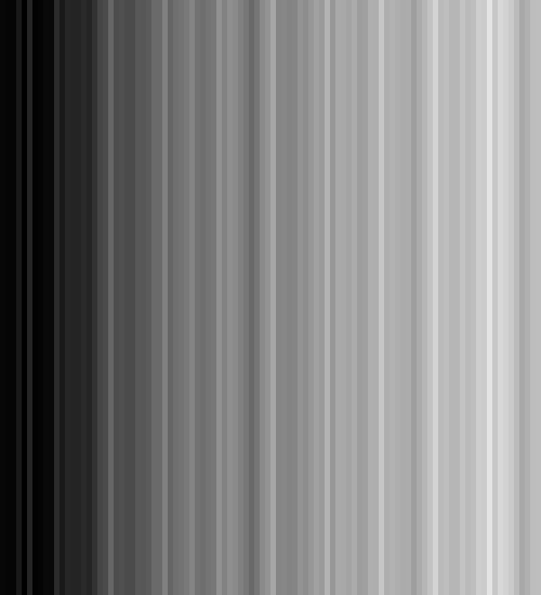
22 减掉的列均值
22_减掉的列均值_实部.png
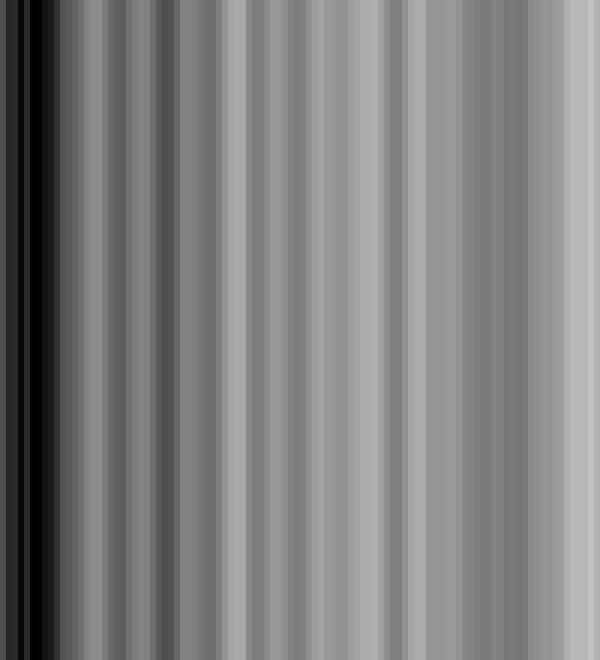
22 减掉的列均值
22_减掉的列均值_虚部.png
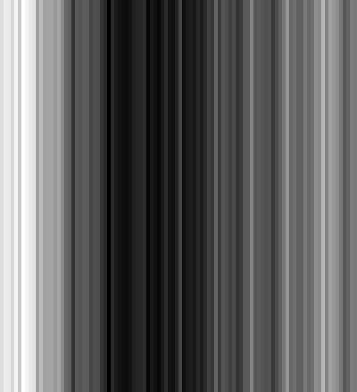
22 减掉的列均值
22_减掉的列均值_幅值.png
22 减掉的列均值
22_减掉的列均值_相位.png
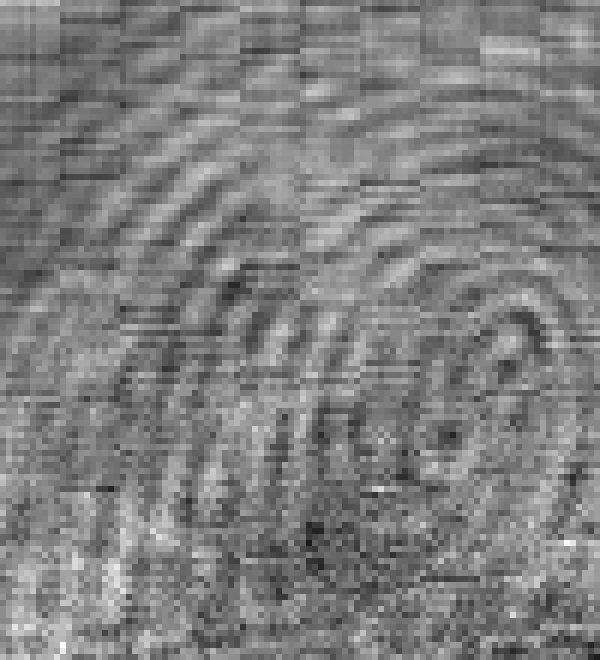
23 减列均值后
23_减列均值后_实部.png
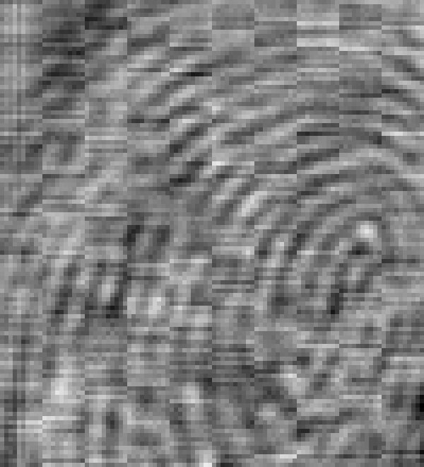
23 减列均值后
23_减列均值后_虚部.png
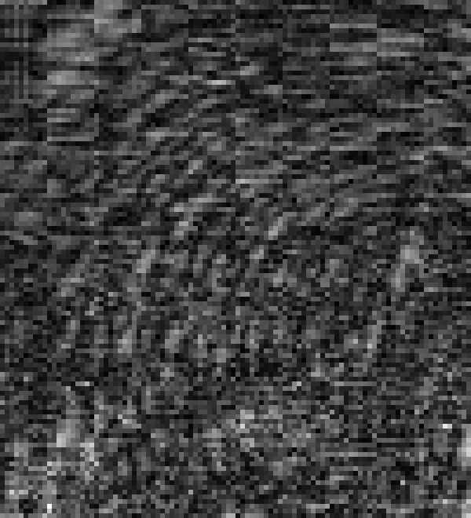
23 减列均值后
23_减列均值后_幅值.png
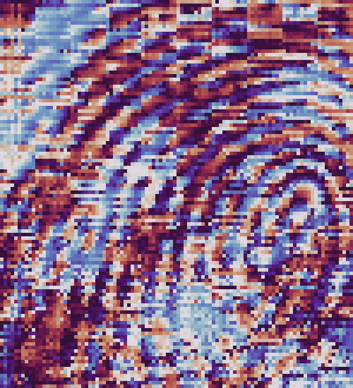
23 减列均值后
23_减列均值后_相位.png
24 减掉的10乘10局部均值
24_减掉的10乘10局部均值_实部.png
24 减掉的10乘10局部均值
24_减掉的10乘10局部均值_虚部.png
24 减掉的10乘10局部均值
24_减掉的10乘10局部均值_幅值.png
24 减掉的10乘10局部均值
24_减掉的10乘10局部均值_相位.png
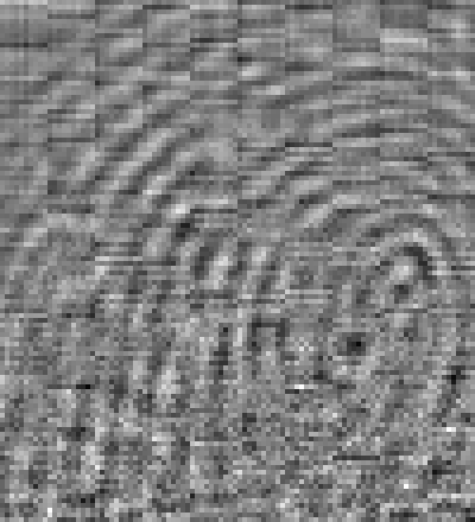
25 局部减均值后
25_局部减均值后_实部.png
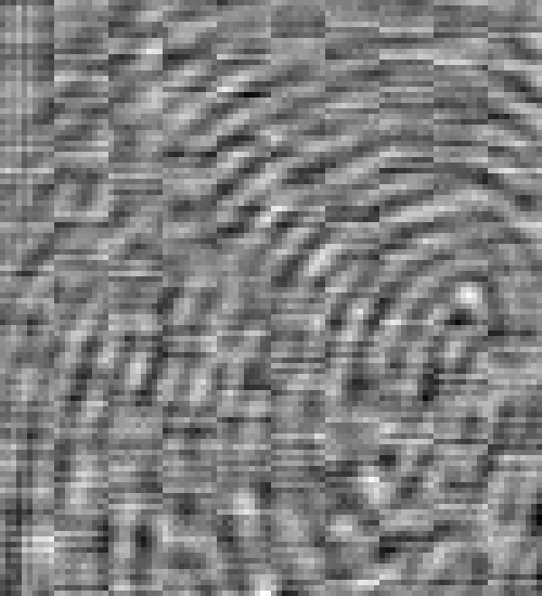
25 局部减均值后
25_局部减均值后_虚部.png
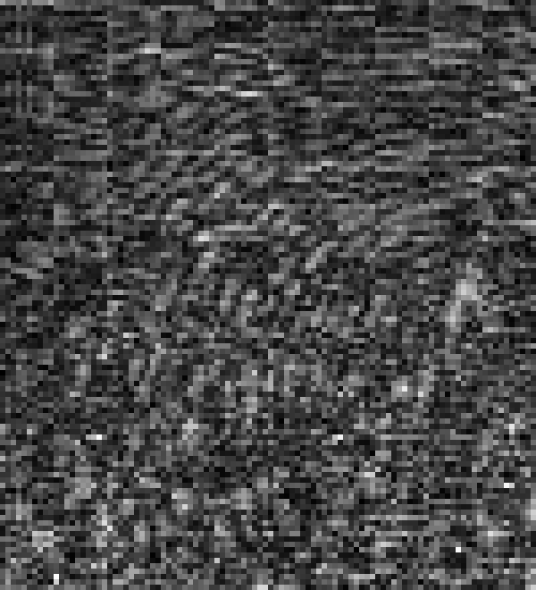
25 局部减均值后
25_局部减均值后_幅值.png
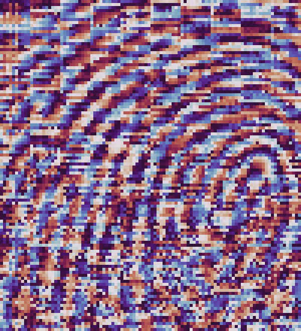
25 局部减均值后
25_局部减均值后_相位.png
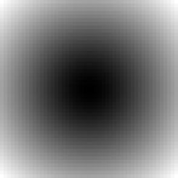
26 49核传播距离
26_49核传播距离.png
27 正向复数传播核
27_正向复数传播核_实部.png
27 正向复数传播核
27_正向复数传播核_虚部.png
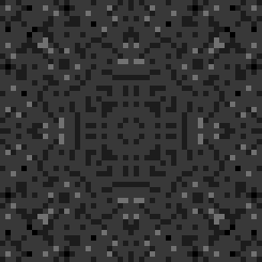
27 正向复数传播核
27_正向复数传播核_幅值.png
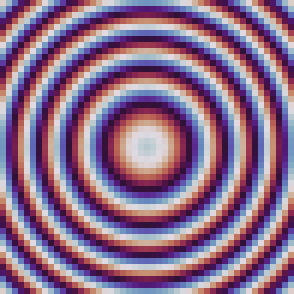
27 正向复数传播核
27_正向复数传播核_相位.png
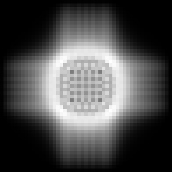
28 正向频谱功率对数
28_正向频谱功率对数.png
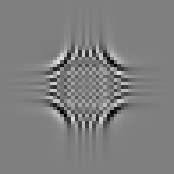
29 正则逆滤波频谱
29_正则逆滤波频谱_实部.png
29 正则逆滤波频谱
29_正则逆滤波频谱_虚部.png
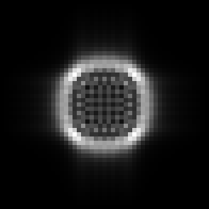
29 正则逆滤波频谱
29_正则逆滤波频谱_幅值.png
29 正则逆滤波频谱
29_正则逆滤波频谱_相位.png
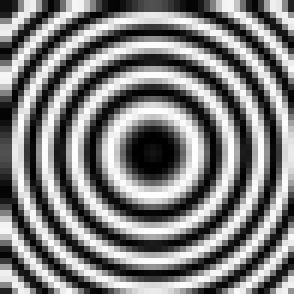
30 空间域复数逆核
30_空间域复数逆核_实部.png
30 空间域复数逆核
30_空间域复数逆核_虚部.png
30 空间域复数逆核
30_空间域复数逆核_幅值.png
30 空间域复数逆核
30_空间域复数逆核_相位.png
31 反射边界扩展
31_反射边界扩展_实部.png
31 反射边界扩展
31_反射边界扩展_虚部.png
31 反射边界扩展
31_反射边界扩展_幅值.png
31 反射边界扩展
31_反射边界扩展_相位.png
32 FFT卷积未裁剪结果
32_FFT卷积未裁剪结果_实部.png
32 FFT卷积未裁剪结果
32_FFT卷积未裁剪结果_虚部.png
32 FFT卷积未裁剪结果
32_FFT卷积未裁剪结果_幅值.png
32 FFT卷积未裁剪结果
32_FFT卷积未裁剪结果_相位.png
33 中心裁剪反卷积结果
33_中心裁剪反卷积结果_实部.png
33 中心裁剪反卷积结果
33_中心裁剪反卷积结果_虚部.png
33 中心裁剪反卷积结果
33_中心裁剪反卷积结果_幅值.png
33 中心裁剪反卷积结果
33_中心裁剪反卷积结果_相位.png
34 全局相位旋转后复场
34_全局相位旋转后复场_实部.png
34 全局相位旋转后复场
34_全局相位旋转后复场_虚部.png
 34 全局相位旋转后复场
34 全局相位旋转后复场
34_全局相位旋转后复场_幅值.png
34 全局相位旋转后复场
34_全局相位旋转后复场_相位.png
 35 旋转后取实部
35 旋转后取实部
35_旋转后取实部.png
 36 统一极性后实数图
36 统一极性后实数图
36_统一极性后实数图.png
 37 最终uint8衍射校正输出
37 最终uint8衍射校正输出
37_最终uint8衍射校正输出.png
05_FFQ质量打分
主链：同一去噪图＋传统外部前景Mask；方向/频率特征图是评分中间量，不是图像增强输出。
 01 输入去噪图
01 输入去噪图
01_输入去噪图.png
 02 外部传统前景Mask
02 外部传统前景Mask
02_外部传统前景Mask.png
03 缩放后的灰度图
03_缩放后的灰度图.png
04 百分位归一化
04_百分位归一化.png
05 中心裁剪到块网格
05_中心裁剪到块网格.png
06 基础横向梯度
06_基础横向梯度.png
07 基础纵向梯度
07_基础纵向梯度.png
08 基础梯度幅值
08_基础梯度幅值.png
09 块级前景判定
09_块级前景判定.png
10 像素级评分前景
10_像素级评分前景.png
11 方向估计专用对比度拉伸
11_方向估计专用对比度拉伸.png
12 方向估计高斯预滤波
12_方向估计高斯预滤波.png
13 方向估计中值滤波
13_方向估计中值滤波.png
14 方向场Sobel横梯度
14_方向场Sobel横梯度.png
15 方向场Sobel纵梯度
15_方向场Sobel纵梯度.png
16 张量gx平方
16_张量gx平方.png
17 张量gy平方
17_张量gy平方.png
18 张量负二倍gxgy
18_张量负二倍gxgy.png
19 基础尺度方向一致性
19_基础尺度方向一致性.png
20 自适应张量n
20_自适应张量n.png
21 自适应张量d
21_自适应张量d.png
22 自适应方向置信度
22_自适应方向置信度.png
23 像素级方向角
23_像素级方向角.png
24 块统计_mean
24_块统计_mean.png
25 块统计_std
25_块统计_std.png
26 块统计_grad_energy
26_块统计_grad_energy.png
27 块级纹线方向
27_块级纹线方向.png
28 块级方向一致性
28_块级方向一致性.png
29 纹线周期估计图
29_纹线周期估计图.png
30 噪声估计高斯参考
30_噪声估计高斯参考.png
31 绝对高频残差
31_绝对高频残差.png
32 块级残差均值
32_块级残差均值.png
33 首个有效投影窗口
33_首个有效投影窗口.png
34 投影窗口有效Mask
34_投影窗口有效Mask.png
35 纹线周期峰谷投影
35_纹线周期峰谷投影.png
按调用顺序首个实际计算投影的窗口，不按效果筛选36 七项子分数
36_七项子分数.png
37 权重融合至最终评分
37_权重融合至最终评分.png
并列的是实际规则的不同阶段，不是多张图的对比